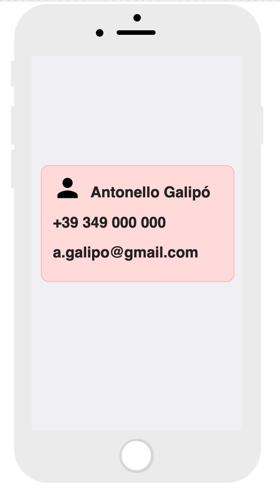

Duration 00:02
Flutter è blah blah blah
Duration 00:20
Prima di iniziare sono necessarie due cose, installare Flutter sul proprio computer e configurare un editor per utilizzarlo con Flutter.
Una volta fatto ciò saremo in grado di scrivere applicazioni in Flutter e di eseguire su:
- dispositivi fisici
- emulatore Android
- emulatore iOS
Duration 00:05
A seconda dell'editor scelto, crea un nuovo progetto Flutter seguendo le istruzioni a questo link.
Chiama l'applicazione BIVI.
Duration 00:02
Cancella tutto il codice contenuto in lib/main.dart ed incolla il seguente:
import 'package:flutter/material.dart';
void main() => runApp(MyApp());
class MyApp extends StatelessWidget {
@override
Widget build(BuildContext context) {
return MaterialApp(
title: 'Flutter Demo',
theme: ThemeData(
primarySwatch: Colors.blue,
),
home: MyHomePage(),
);
}
}
class MyHomePage extends StatelessWidget {
@override
Widget build(BuildContext context) {
return Scaffold(
appBar: AppBar(
title: Text("BIVI!"),
),
body: Center(
child: Text("Placeholder"),
),
);
}
}
Duration 01:30
In questa sezione creerai la pagina contenente la prima parte del biglietto da visita.
Utilizza i widget Card, Container, Row, Column e Textper realizzare un layout simile a quello in figura.
Ricorda:
- gli attributi
color,widthedheightdiContainer - la dimensione di una
Cardè dettata dalContainerche la contiene - gli attributi
MainAxisAlignmenteCrossAxisAlignmenrdiRoweColumn - l'attributo
stylediText
La schermata sarà simile al seguente wireframe:

Duration 01:00
Il widget InkWell
InkWell è uno dei widget piú comuni per rendere interattivo un wigdet.
Inserendo un widget come child di un InkWell, sarà infatti possibile specificare le azioni da compiere a fronte di un tap, doppio tap, long press, etc.
Le azioni da compiere a fronte di un evento di tocco sono descritte da funzioni di eseguire, che possono essere fornite al widget in uno dei seguenti modi:
InkWell(
onTap: () {
print("tapped!");
},
onDoubleTap: () {
print("double tapped!");
},
child: //Widget da rendere tappabile,
),
La navigazione
La navigazione in Flutter puó essere vista come una pila di schermate (widget) della quale lo schermo visualizza la cima.
Ogni volta che navighiamo su una nuova schermata, la aggiungiamo alla cima della pila. Ogni volta che torniamo indietro, rimuoviamo dalla cima della pila la schermata che stiamo visualizzando in quel momento.
La navigazione è gestita da un componente specializzato chiamato Navigator.
Per navigare su una nuova schermata, un esempio di come effettuare il push di essa nello stack (pila) di navigazione in questo modo:
Navigator.of(context)
.push(MaterialPageRoute(
builder:(context){
return NewPage();
}),
);
Il codice riportato ottiene un riferimento all'istanza di Navigator
relativa al contesto attuale, e richiede il push di una nuova pagina,
costruita mediante il builder messo a disposizione dalla classe MaterialPageRoute.
Rendere interattivo il biglietto da visita
È possibile combinare InkWell e le azioni col Navigator per aggiungere interattività
e navigare su una seconda schermata, che al momento sarà vuota.
Per fare ciò:
- Crea una nuova schermata aggiungendo in fondo a
main.dartil seguenteclass MyBiography extends StatelessWidget { @override Widget build(BuildContext context) { return Scaffold( appBar: AppBar( title: Text("Antonello Galipò"), centerTitle: true, ), body: Container( color: Colors.red, ), ); } } - Rendi tappabile il biglietto da visita inserendolo in un
InkWelled usandoNavigatorin questo modo:Navigator.of(context) .push(MaterialPageRoute( builder:(context){ return MyBiography(); }), );
In Flutter le immagini possono essere mostrate in diversi modi:
Image.asset(path)Image.memory(buffer)?Image.network(url)
La seconda pagina dell'app dovrà mostrare un'immagine recuperata da internet
ed una piccola descrizione.
Un esempio di immagine caricata da internet è il seguente:
Image.network("https://prova.example.com");
Completa la seconda schermata
Modifica il widget MyBiography includendo un'immagine dalla rete ed un testo, per ottenere un layout simile:
You're done for the day!